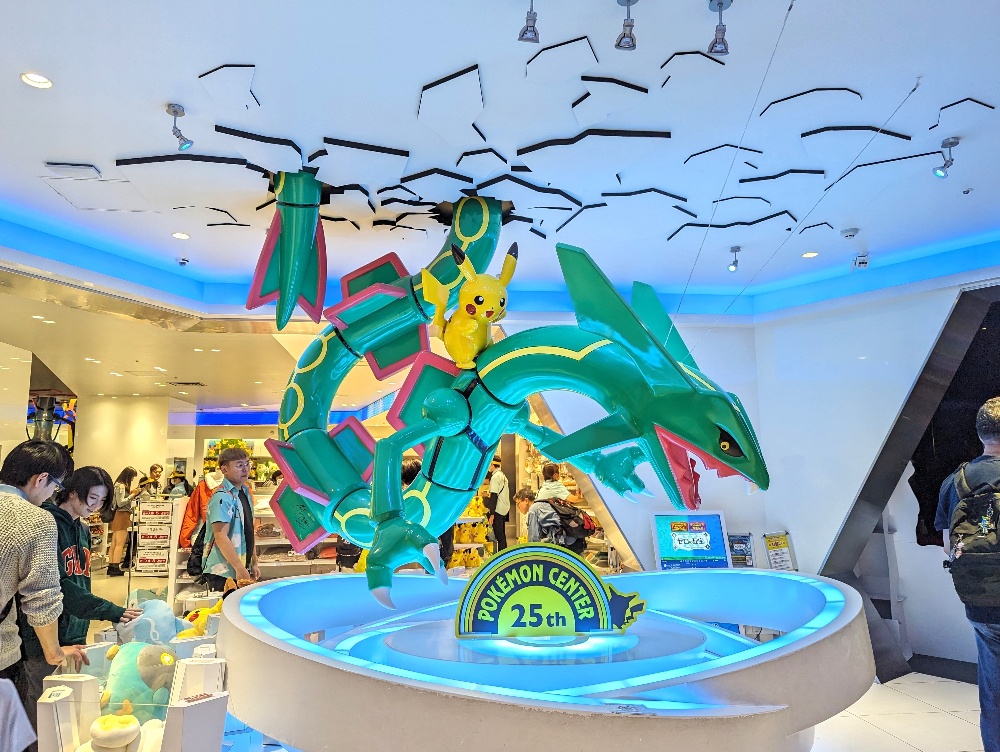

Le mont Fuji est une montagne du centre du Japon qui se trouve sur la côte sud de l'île de Honshū, au sud-ouest de l'agglomération de Tokyo. Avec 3 776 mètres d'altitude, il est le point culminant du Japon.
les paysages
decouvrir les paysages
Ce chemin connu pour ses milliers de toriis vermillon formant un tunnel sur la colline sur laquelle le temple est construit. Ces toriis sont pour la plupart des dons faits par des particuliers, des familles ou des entreprises à Inari.

Comptant environ 2600 sakura, dont certains ont plus de 300 ans, les cerisiers en fleurs du parc de Hirosaki offrent un spectacle d'exception. Le parc abrite plus de 50 variétés de sakura dont le somei yoshino, le plus célèbre des cerisiers d'ornement.

Les Plages d'Okinawa, est l'une des 3 plages les plus belles, elles accueillent plusieurs arrivées chaque année. Ces plages attirent les voyageurs par le sable blanc et l'eau pure. Vous pouvez faire aussi le snorkeling pour voir les récifs de corail.
les villes
decouvrir les villes
Capitale animée du Japon, Tokyo associe ultramoderne et traditionnel, gratte-ciels illuminés et temples historiques. L'opulent sanctuaire shinto Meiji est réputé pour son imposant portail et les bois qui l'entourent.

Ancienne capitale du Japon, Kyoto est une ville située sur l'île de Honshū. Elle est réputée pour ses nombreux temples bouddhistes classiques, ainsi que ses jardins, ses palais impériaux, ses sanctuaires shinto et ses maisons en bois traditionnelles.

Osaka est une grande ville portuaire et un centre commerçant de l'île japonaise d'Honshū. Elle est connue pour son architecture moderne, sa vie nocturne et la qualité de sa street food. Principal monument historique de la ville, le château d'Osaka.
Au centre-sud de l'île d'Honshū, Nara est la capitale de la préfecture japonaise du même nom. La ville abrite des œuvres d'art et des temples importants qui remontent au VIIIe siècle, lorsqu'elle était la capitale du Japon. Des cerfs flânent dans le parc de Nara, où se trouve le temple Tōdai-ji.
les magasins
decouvrir les magasins

Pokemon Center, le temple dédié aux fans de l'univers Pokémon est au centre commercial Sunshine City d'Ikebukuro, à Tokyo.

Sega Gigo Arcade est une véritable institution dans le monde du jeu vidéo à Tokyo. Cette salle d'arcade emblématique est située à Akihabara et attire les joueurs du monde entier.
AmiAmi est l'un des magasins de figurines les plus réputés au Japon, situé en plein cœur d'Akihabara. Réputé pour son vaste inventaire, AmiAmi propose une sélection de figurines issues d'animes, de mangas et de jeux vidéo.

Aux environ d'Akihabara, vous devez absolument faire un tour à Animate. Si vous etes un grand fan des animes/mangas, Animate en a pour tous les goûts. Ce magasin ne propose pas moins de 7 étages d'animes populaires ou de goodies.
les restaurants
decouvrir les restaurants
A Akihabara on trouve un restaurant de soba (pâtes à base de sarrasin) installé dans le quartier de Kanda-sudacho réputé être le meilleur de tout Tokyo, Kanda Matsuya. L’Établissement est plus que centenaire (il a été créé en 1884).

Dans le quartier de Shibuya, Shokkan est l’adresse qu’il vous faut. Loin des néons et de l’agitation du quartier, ce restaurant intimiste installé au sous-sol d’un immeuble banal propose aux convives une cuisine japonaise authentique.

La petite vedette des restaurants étoilés est le très vénéré Sukiyabashi Jiro. Il s’agit du fameux restaurant récompensé de trois macarons et qui a accueilli Barack Obama à son comptoir. Ici la place se paye cher, les réservations sont bookées plusieurs semaines.
Depuis plus de 100 ans, le Rengatei sert sa cuisine spéciale faite de plats aux influences occidentales, notamment le tonkatsu et le riz-omelette. Il est salué comme l’inventeur du célèbre porc tonkatsu japonais. Les aliments frits occupent une bonne partie de la carte.